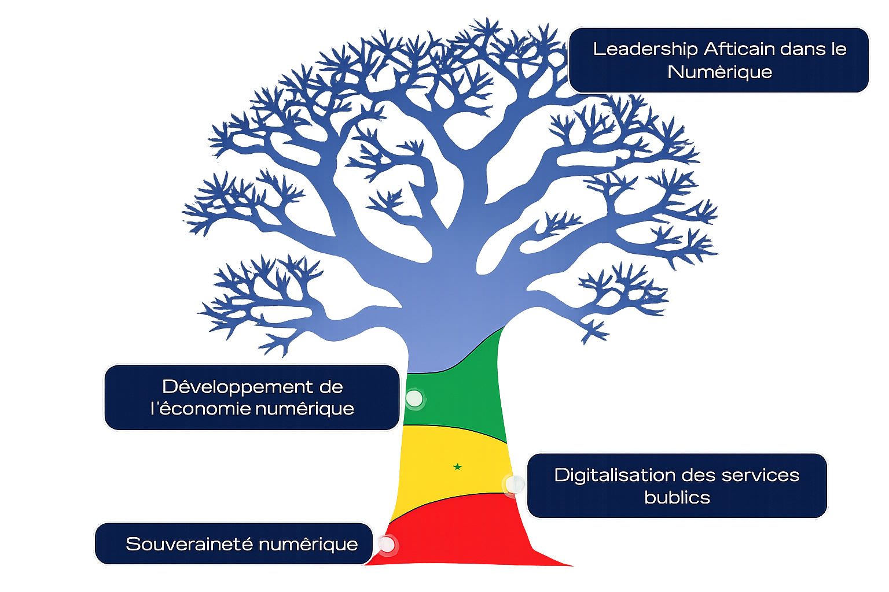

Souveraineté Technologique
Promouvoir la souveraineté nationale à travers des technologies endogènes et innovantes.

Promouvoir la souveraineté nationale à travers des technologies endogènes et innovantes.

Accélérer la digitalisation de l'administration pour un service public efficace et accessible.

Développer l'économie numérique pour une croissance inclusive et compétitive.

Positionner le Sénégal comme leader numérique en Afrique avec une vision panafricaine.
Le Président de la République, Son Excellence Monsieur Bassirou Diomaye Faye, a présenté le 14 octobre 2024 un nouveau cadre de référence pour les politiques économiques et sociales, intitulé l’Agenda National de Transformation (ANT).Ce cadre s’inscrit dans la Vision 2050 visant à bâtir« une nation souveraine, juste et prospère ». L’objectif principal de cet agenda est de promouvoir un développement endogène et durable, porté par des territoires responsabilisés, viables et compétitifs, tout en posant les fondements de la souveraineté nationale.L’Agenda National de Transformation ambitionne d’accélérer la révolution numérique, en mettant un accent particulier surla digitalisation de l’administration et le développement de l’économie numérique.
Les indicateurs clés de succès pour la Vision 2050 dans le cadre du New Deal Technologique incluent :